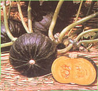

SEPTEMBER OCTOBER
Summer's fierce heat is exhausted, and a mellower warmth cloaks autumn's bright kingdom. Multicolored delights tumble from the garden's cornucopia, providing fit recompense for the labors of spring and summer. Gather in the good earth's abundance, and allow yourself to feel awe for the miracle of yet another completed cycle of growth and harvest.
HINTS FOR HARVEST HOME
Over much of the country, the first frost will likely occur before Halloween . . . and that means that some crops will have to be harvested, while others can laugh at the chill and remain in the garden for a few weeks more. Here's a list of popular vegetables with some hints on harvesting.
Snap Beans: Frost-tender. Gather the pods when they're fully grown, but before the seeds develop too much. Frequent picking encourages larger crops, but a frost will bring an end to growth.
Dry Beans: Frost-tender. Harvest the pods when a majority of them are yellow and dry, and when most of the leaves have fallen. Pull the plants up by the roots and hang them so the beans can finish drying. Then shell out the legumes and store them in a cool, dry place.
Beets: Frost-hardy. Pull them when the roots are about 2" in diameter. (Varieties such as Lutz Winter Keeper can remain in the ground for an extended period without getting woody.) Store the crop in a cool, humid place.
Broccoli: Somewhat frost-hardy. Cut the center head before the buds flower, and then continue to harvest the side heads that develop after the center is taken.
Brussels Sprouts: Frost-hardy (in fact, moderate freezes improve the flavor of these minicabbages). To spread your harvest over a period of time, begin cutting the lowest sprouts when they reach 1 " in diameter. (Remove the lower leaves at the same time.) For a concentrated harvest, pinch off the growing tip in mid- to late September (or when the bottom sprouts are 1/2" in diameter).
Cabbage: Frost-hardy. Cut the heads when they're firm. To keep cabbages from bursting as they mature, give them a quarter twist. This, in effect, root-prunes the plant and checks rapid growth.
Carrots: Somewhat frost-hardy. Pull them before the ground freezes. The best time for harvesting is during the first two or three weeks after the bright orange color develops. Store carrots in a cold, humid place.
Corn: Frost-tender. Cut the ears when their silk dries and browns and the kernels spurt milk when squeezed with a fingernail. (If you don't know when to harvest the corn, the raccoons will!)
Cucumbers: Frost-tender. Pick some daily (small cukes are very tasty) to sustain production.
Eggplant: Frost-tender. Keep them picked to sustain production.
Kale: Very frost-hardy, and the flavor actually benefits from exposure to freezes. Kale can be mulched (with leaves or snow) to provide a harvest that extends into the winter.
Lettuce: Somewhat frost-hardy. Protect the heads with cloches to extend your harvest.
Onions: Frost-hardy. Gather them when the tops fall over and yellow off, and skins develop on the bulbs. Cure the crop for a week in a dry, airy place before storing it in bags in a cool, dry location.
Melons: Frost-tender. Cantaloupes are ripe when the skin turns a yellowish tan and the stem slips from the fruit under gentle thumb pressure. Mature honeydews develop a yellowish color, while watermelons turn yellow at the spot where the fruit rests on the ground and have a characteristic hollow sound when tapped with the knuckles.
Parsnips: Very frost-hardy, and freezing improves their flavor. Add mulch for a harvest that can extend till spring.
Peas: Somewhat frost-hardy. Pick them young to keep them coming.
Peppers: Frost-tender. Early harvesting encourages additional fruit. If you like red sweet peppers, though, just wait a little while . . . those green ones will color up!
Pumpkins: Frost-tender. They're ready to harvest when the skin resists puncture. Leave a couple of inches of stem on the fruit for better storage life.
Winter Squash: Frost-tender. Pinch out the growing point of each plant three weeks before frost to help the fruit ripen. Then, when the squash's skin resists puncture by a fingernail, cut it - leaving 1" to 2" of stem - and allow it to cure in the sun for ten days. (Acorn squash does not require the curing period.) Do not expose winter squash to frost . . . because its ability to withstand storage will be adversely affected by below-freezing temperature.
Tomatoes: Frost-tender. If a light freeze is expected, cover your plants with sheets, blankets, or plastic. (Often you'll get an additional two weeks of ripening if you can nurse the tomatoes past the first frost.) If a hard frost threatens, pick the crop green and wrap each fruit in newspaper, allowing it to ripen over the next few weeks. (This works only with perfect, unblemished tomatoes.)
|
|
 |
|